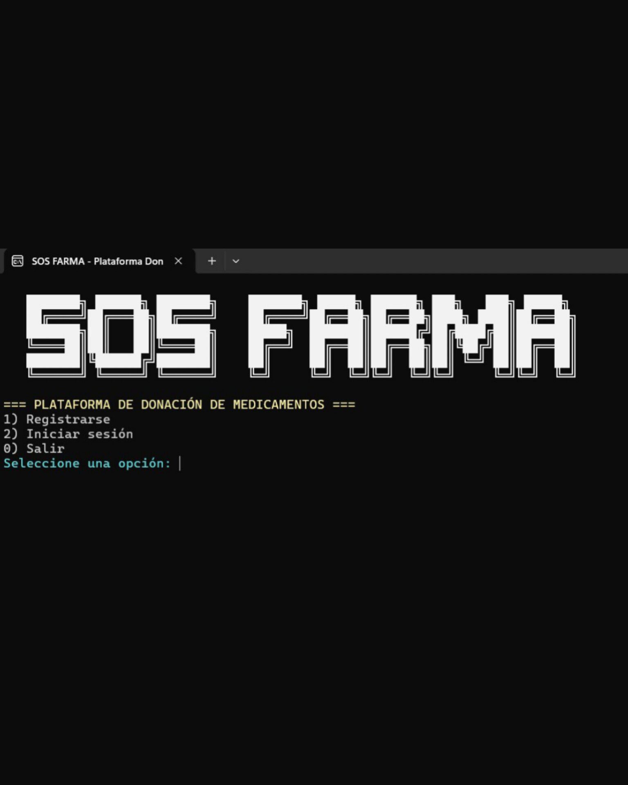

Sobre mí
Me apasiona el desarrollo de software, la robótica y la inteligencia artificial, áreas en las que busco crear soluciones innovadoras con impacto real.
Actualmente estoy fortaleciendo mis habilidades en desarrollo web, programación y bases de datos mediante proyectos académicos y personales.
Objetivo Profesional
Busco adquirir experiencia práctica en el desarrollo de software participando en proyectos que me permitan aplicar y consolidar mis conocimientos.
Tecnologías
Proyectos
Robot interactivo con IA
Sistema que reconoce emociones mediante inteligencia artificial e interactúa con el usuario.
Proyecto ganador de Hult Prize at ESAN 2026 y participando actualmente en Hult Prize Nationals 2026.
Repositorio - 2026 Demo - 2025
SOSFarma
Sistema desarrollado en C# que gestiona usuarios, donaciones y solicitudes de medicamentos.
DemoIntereses
Disfruto aprender nuevas tecnologías, explorar tendencias digitales y trabajar en ideas creativas.
Me interesa combinar la lógica con la innovación para seguir creciendo profesionalmente.